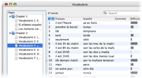

Easily repeat your vocabulary with ProVoc
Discover how easy it is to repeat your vocabulary with ProVoc!
Enter your words |
|
|  |
Start by entering your list of words or sentences with their respective translation. You can also import words from a text file, or download documents provided by other users. |
Train your vocabulary |
|
 |
ProVoc let you repeat your vocabulary by asking the translation of randomly chose words. For optimal results, ProVoc let you create and customize various training modes. |
Repeat your vocabulary anywhere |
|
 |
Continue to repeat your vocabulary anywhere at any time! Either by printing two-sided flash cards or by transferring your vocabulary on your iPod. |
Repeat your vocabulary at any time |
|
 |
The most difficult thing about learning a language is certainly to find time for it, isn't it? With the ProVoc widget, you can now use any spare minute to quickly repeat a bit of your vocabulary! Whenever you feel like, just hit F12 and train a couple a words... The ideal short break to take at any time! |
Add sound to your vocabulary |
|
|
ProVoc not only helps you learn reading and writing a foreign language, but also allows to improve your pronunciation and oral understanding! Sounds like perfect to be used with your iPod, isn't it? |
|
Add pictures and videos to your vocabulary |
|
 |
That is not all: you can also add images and movies to your vocabulary. Ideal to train your visual memory, or to learn sign languages! With an iSight, you can even capture pictures and record videos directly with ProVoc. |
Learn any language |
|
|
Since ProVoc is based on Mac OS X technologies, you can use it for any alphabet: Greek, Japanese, Chinese, Hebrew, Arabic... |
|